Vizualni identitet Knjižnica grada Zagreba temelji se na reinterpretaciji danas gotovo nestalih elemenata knjižničnog sustava – kartica s datumima posudbe i pripadajućih džepića. Taj analogni sustav, nekad temelj organizacije znanja, postaje polazište za suvremeni, modularni i fleksibilni identitet.
Struktura identiteta funkcionira po jasnom hijerarhijskom principu: džepić uvijek označava širi kontekst ili grupu, dok kartica unutar njega precizira sadržaj. Ovaj princip izravno vizualizira način na koji knjižnica funkcionira iznutra: kataloge, fondove i građu organizirane u slojevima, mapama unutar mapa. Identitet ne gradi apstraktan simbol, već prevodi stvarnu unutarnju logiku knjižničnog rada u čitljiv vizualni jezik. Ono što je knjižnicama utilitarni alat, u identitetu postaje snažan simbol znanja, reda i dostupnosti.
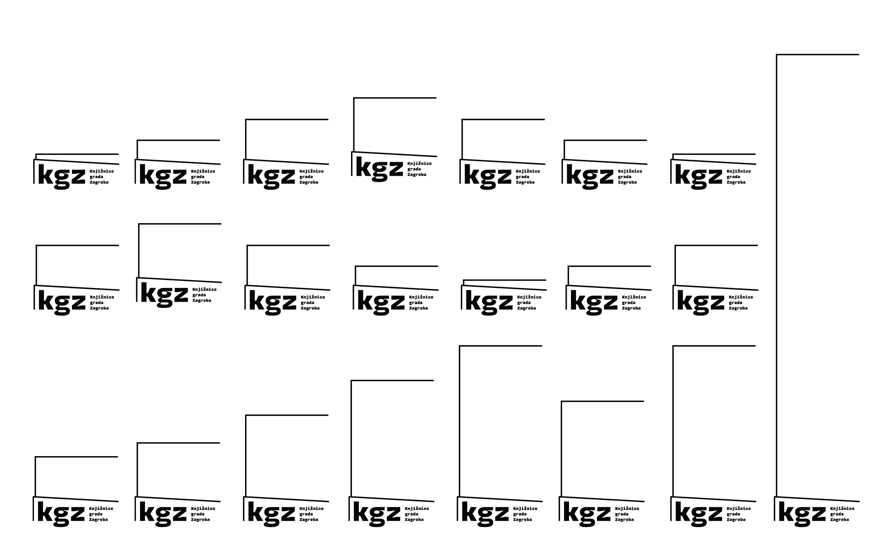
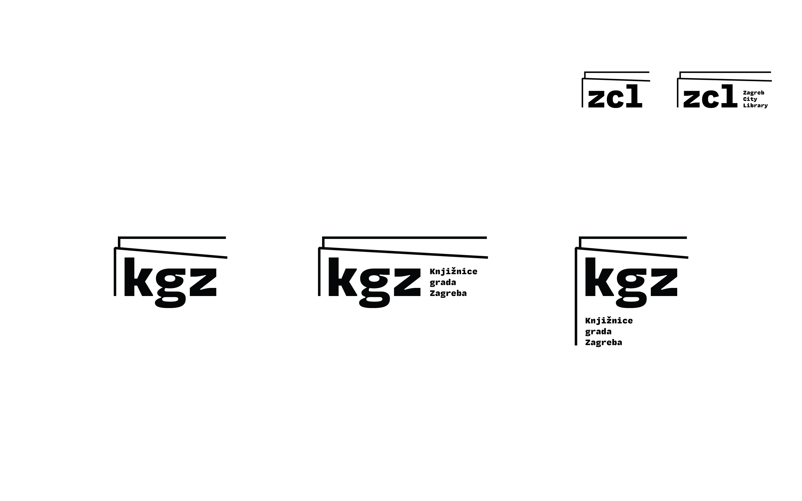
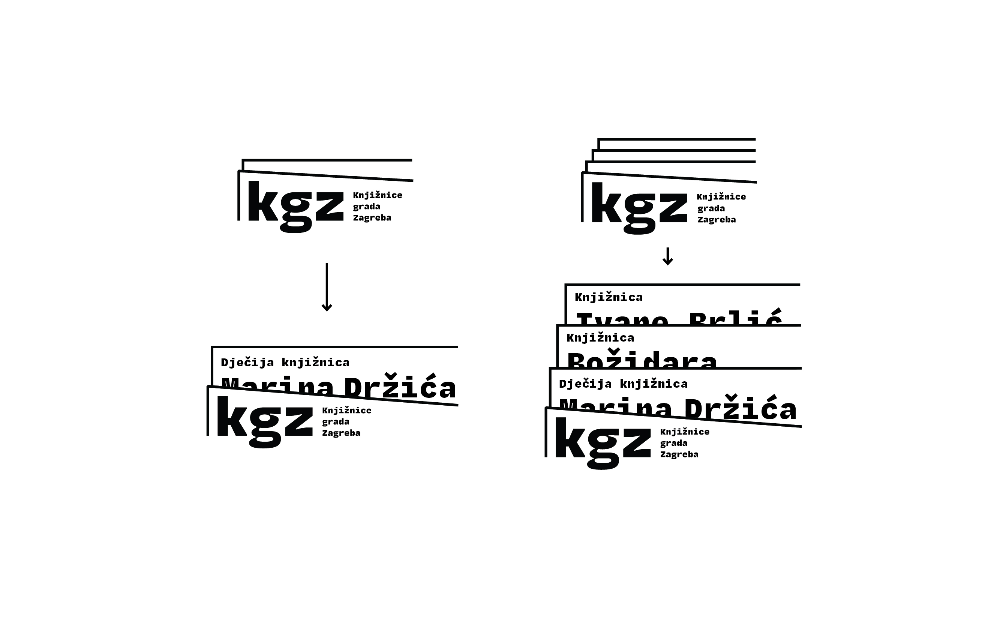
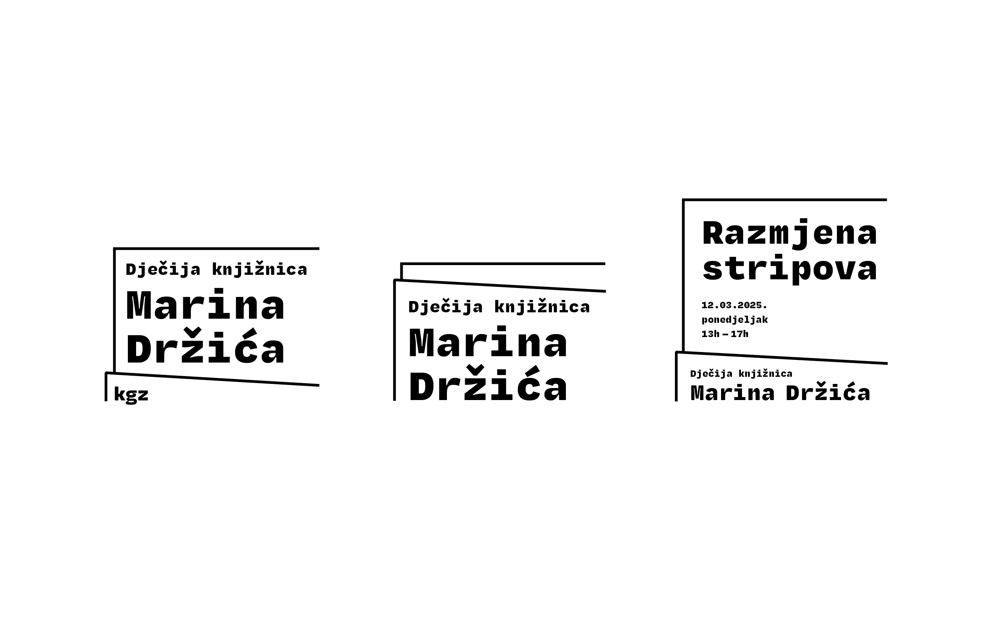
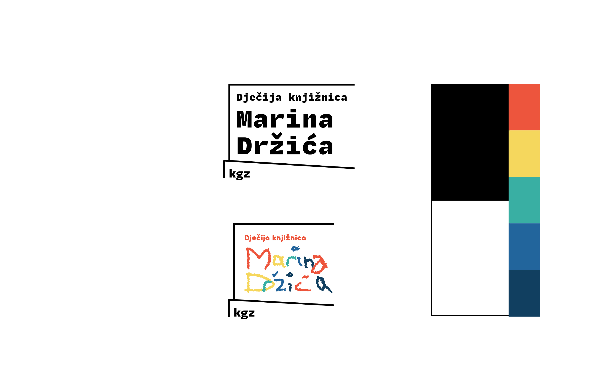
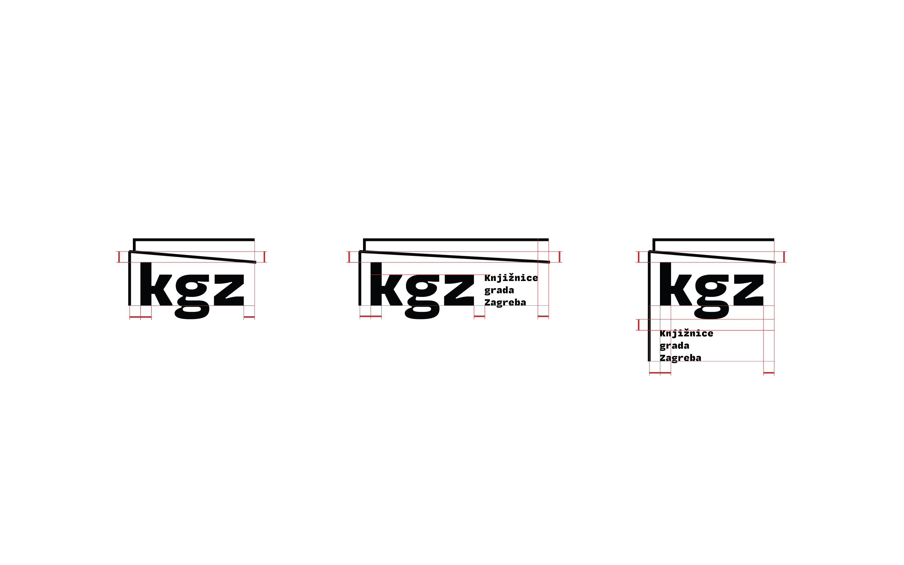
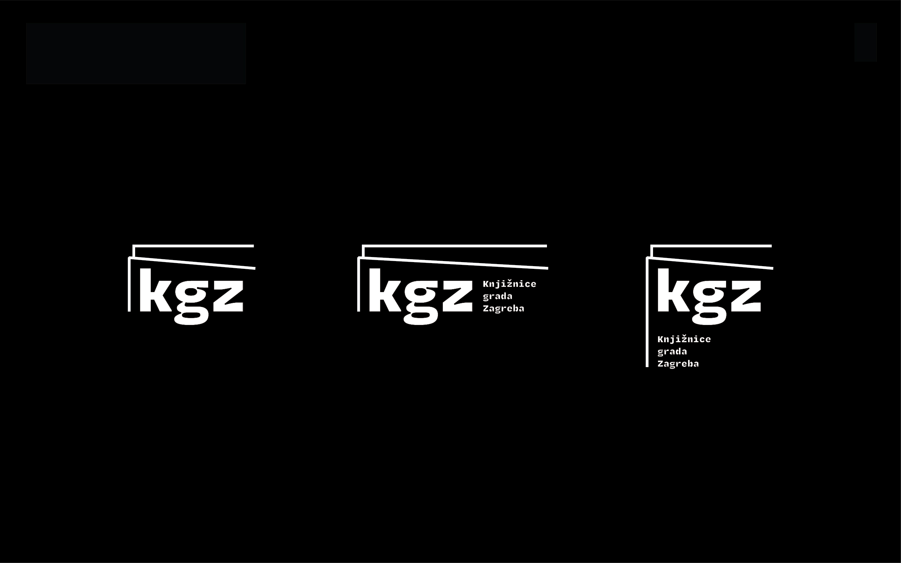
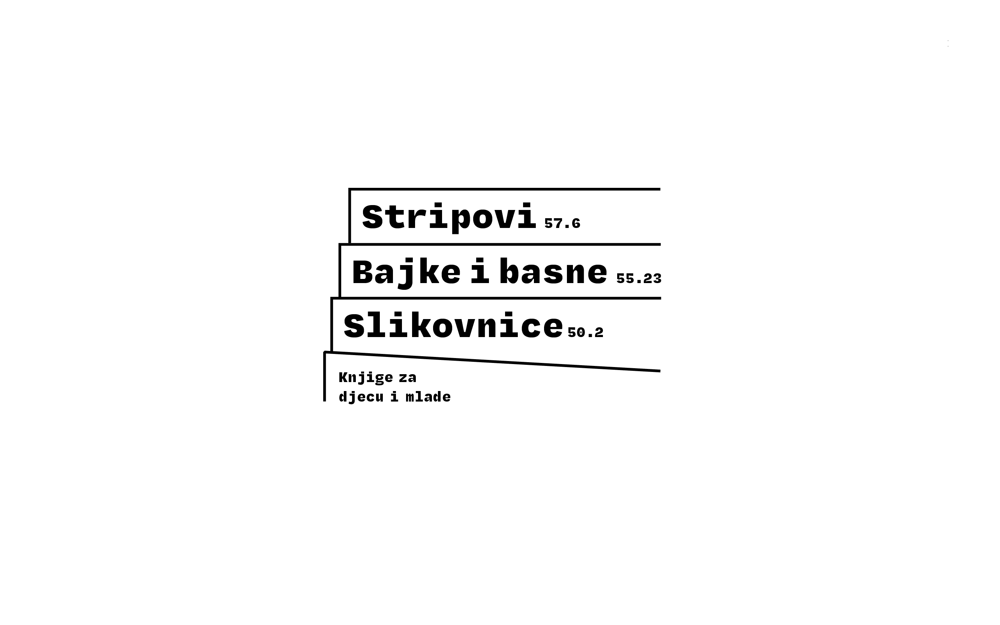
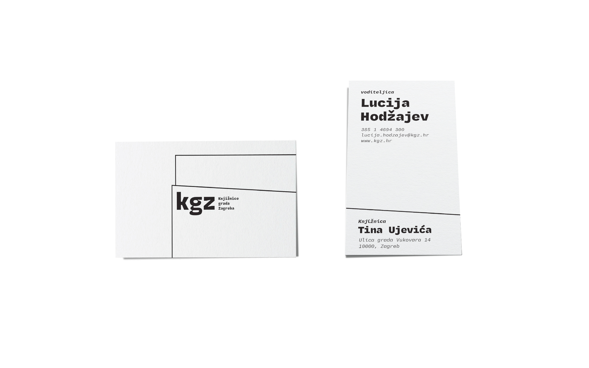
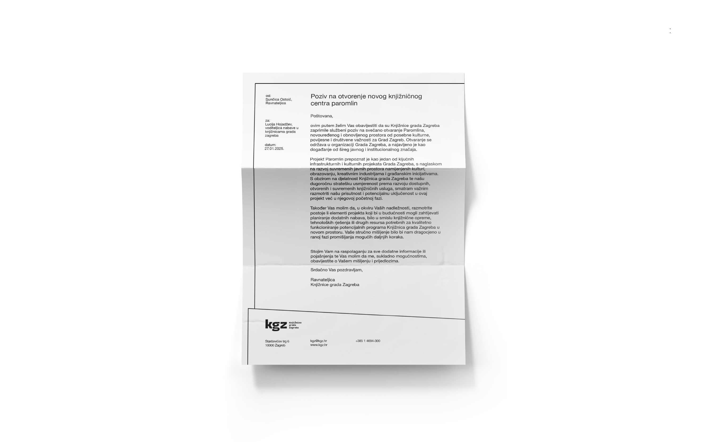
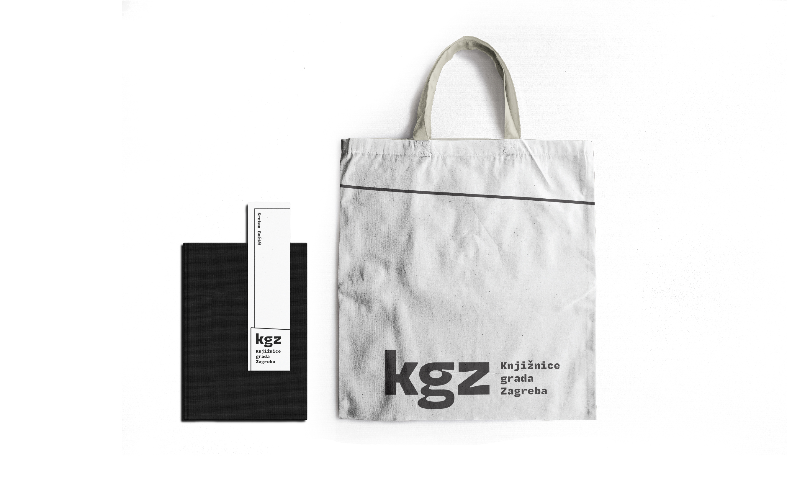
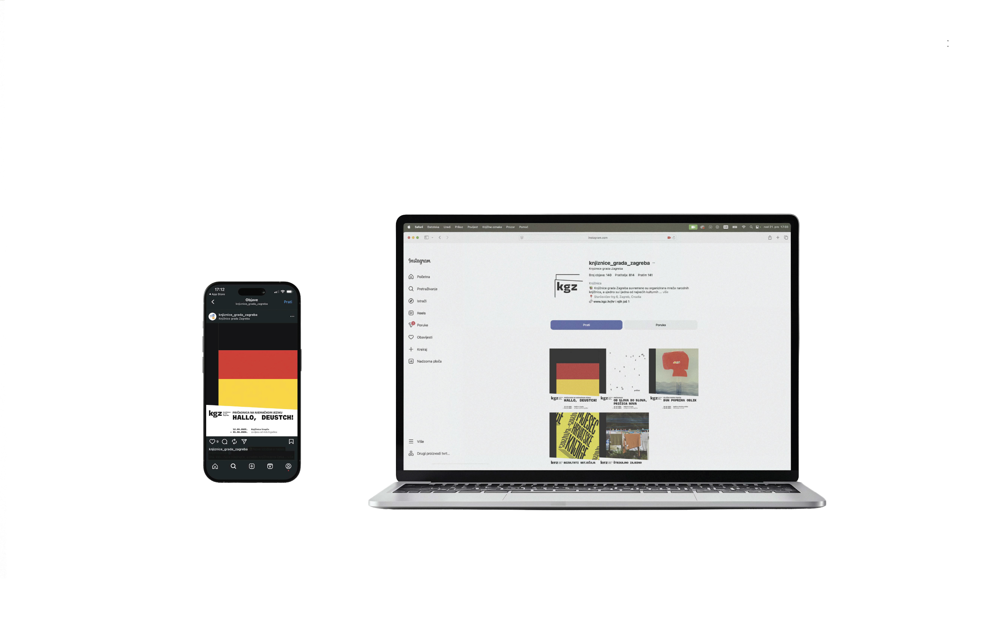
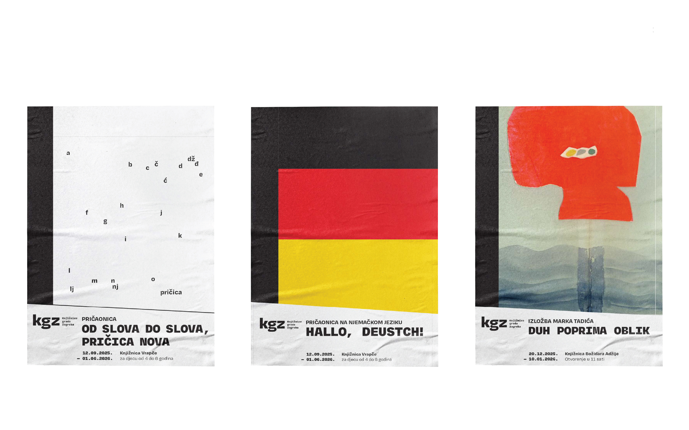
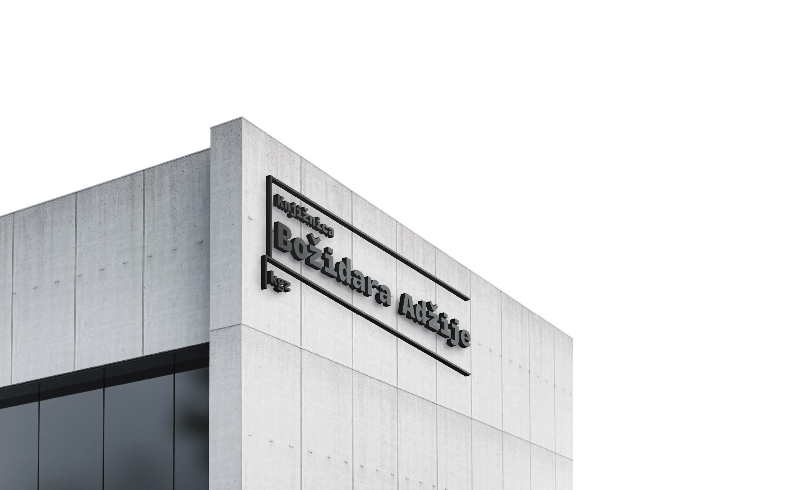